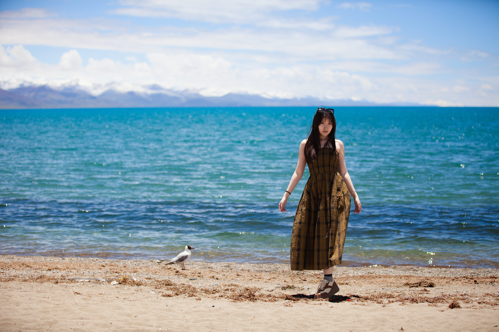

Travel Notes
Above the clouds
Tibet felt completely different from anywhere else we have been. The sky was so clear, the mountains felt close, and every road seemed to lead into a quiet, wide landscape. We spent our time slowly taking in the views, walking through peaceful places, and capturing photos that felt calm, powerful, and unforgettable.
Selected Photos
Moments from Tibet


